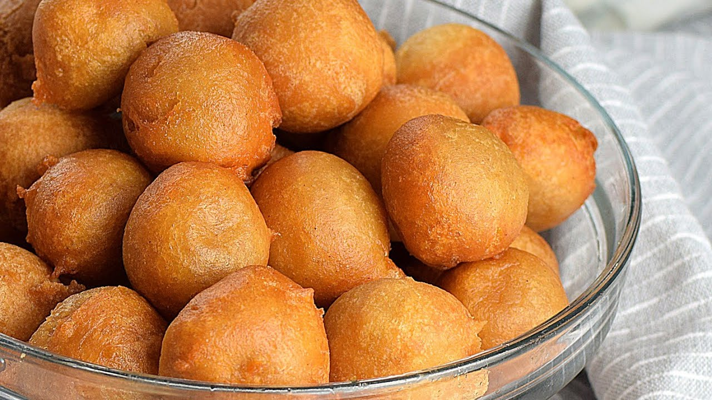
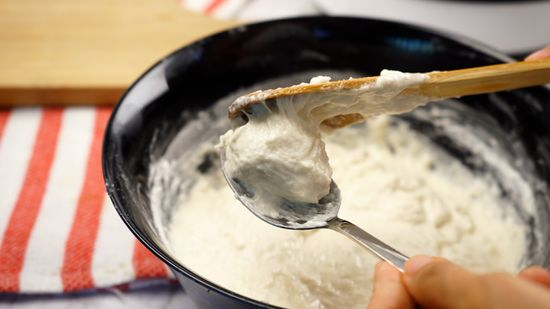
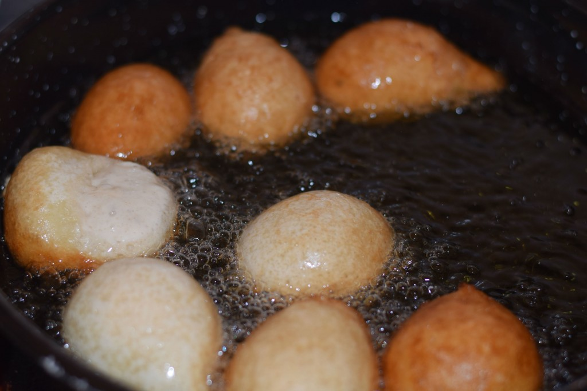
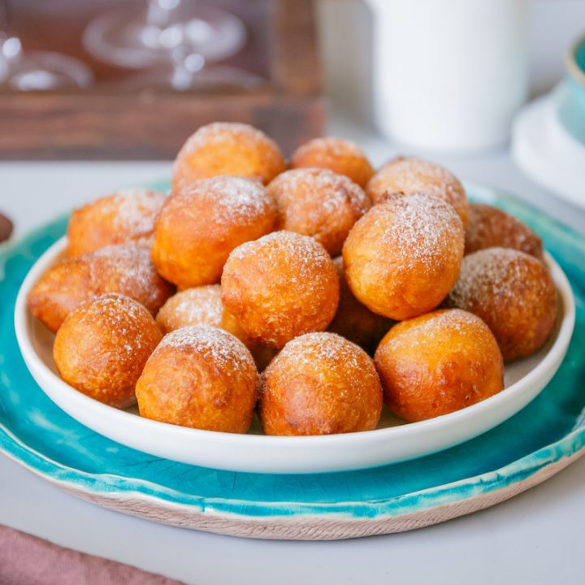

Puff Puff is a common gift for newlyweds. It is said that giving the couple a tray of puff puff signifies that they will have a sweet life together and that they will never run out of sweet treats to enjoy. The couple may also use the chin chin as a snack during their honeymoon, making it a practical and sentimental gift.
Nigerian Puff Puff: How to Make an Easy Sweet Treat!
Puff Puff is a popular snack food in Nigeria. It is made by mixing flour, sugar, yeast, salt, and water to form a dough, which is then deep-fried in oil until it puffs up and turns golden brown. The result is a soft and fluffy doughnut-like snack that is often enjoyed with tea or coffee.
Recipe Details:
- Prep time: 5 minutes
- Resting time: 1 hour
- Cook time: 15 minutes
- Servings: 10
| Ingredient | Quantity |
|---|---|
| All-purpose flour | 2 cups |
| Active dry yeast | 2 teaspoons |
| Granulated sugar | 1/2 cup |
| Salt | 1/2 teaspoon |
| Nutmeg | 1/2 teaspoon |
| Cinnamon | 1/2 teaspoon |
| Warm water | 1 cup |
| Warm milk | 1/2 cup |
| Vegetable oil | 1/2 cup |
| Vegetable oil for deep frying | 1 bottle |
Cooking Directions:
- In a large bowl, mix the flour, yeast, sugar, salt, nutmeg, and cinnamon.
- Add the warm water and warm milk to the dry ingredients and mix well.
- Gradually add the vegetable oil, mixing until you have a smooth batter. 
- Cover the bowl with a cloth or plastic wrap and set aside in a warm place for about 1 hour or until the batter has doubled in size.
- Fill a large saucepan or deep-fryer with enough vegetable oil to cover the puff puff.
- Heat the oil over medium heat until it reaches 350°F.
- Using a spoon or cookie scoop, drop small portions of the batter into the hot oil.
- Fry the puff puff until golden brown, about 2 to 3 minutes on each side. 
- Remove the puff puff with a slotted spoon and place on a paper towel-lined plate to drain any excess oil.
- Serve the puff puff warm, sprinkled with powdered sugar, if desired.
- Enjoy your tasty Nigerian Puff Puff! 